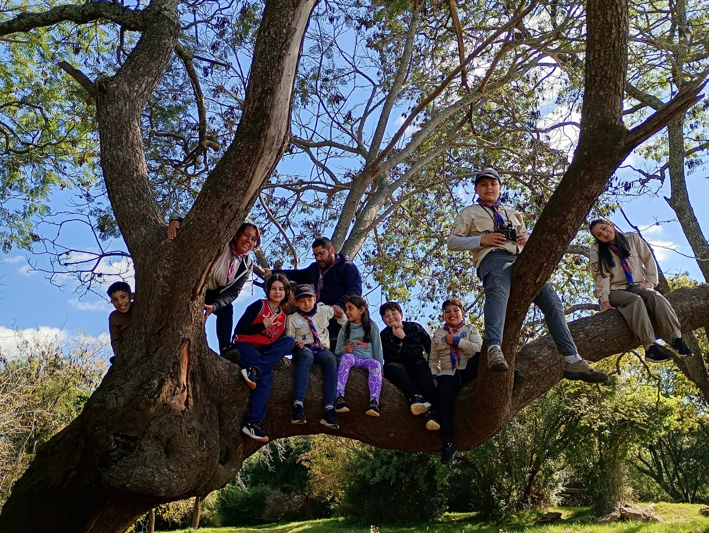

01
Vida al aire libre
La naturaleza es nuestro aula.
Aprendemos a vivir en ella, a respetar sus tiempos y a cuidar el ambiente. Cada campamento es una oportunidad para desconectarnos de las pantallas y reconectar con lo esencial: el fuego, el cielo y la tierra.
Los chicos descubren que el esfuerzo de armar una carpa o cocinar al fogón tiene una recompensa que no se compara con nada.
